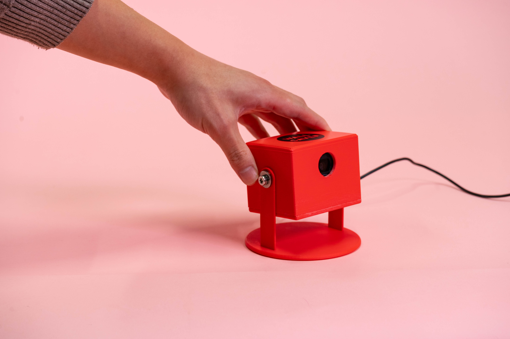
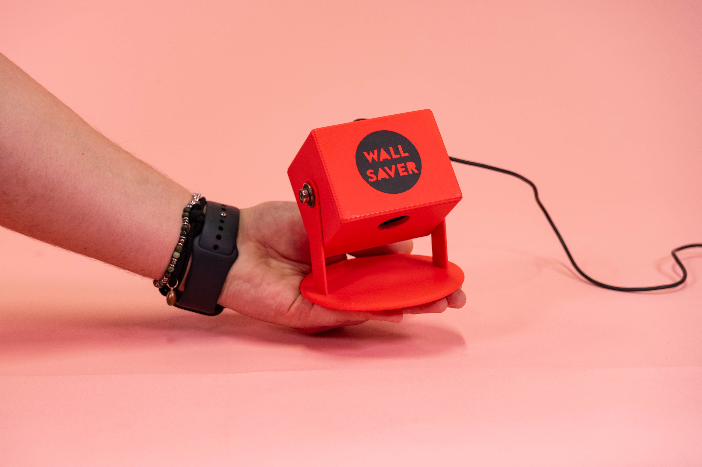
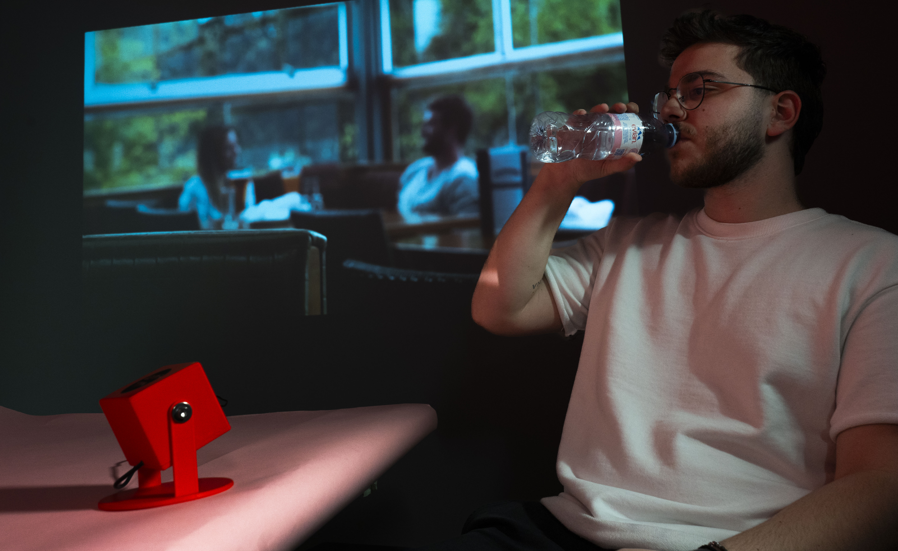
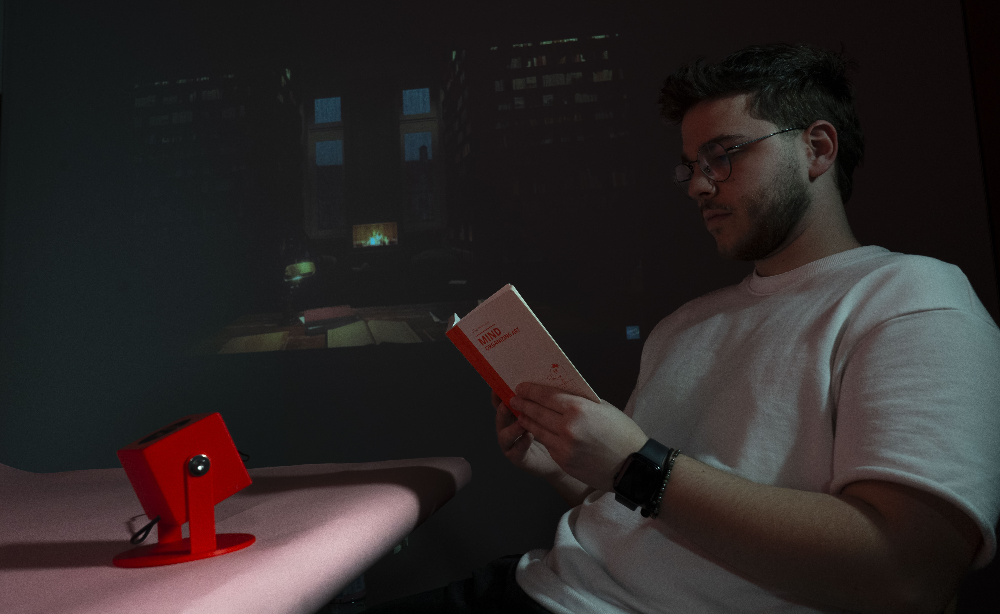
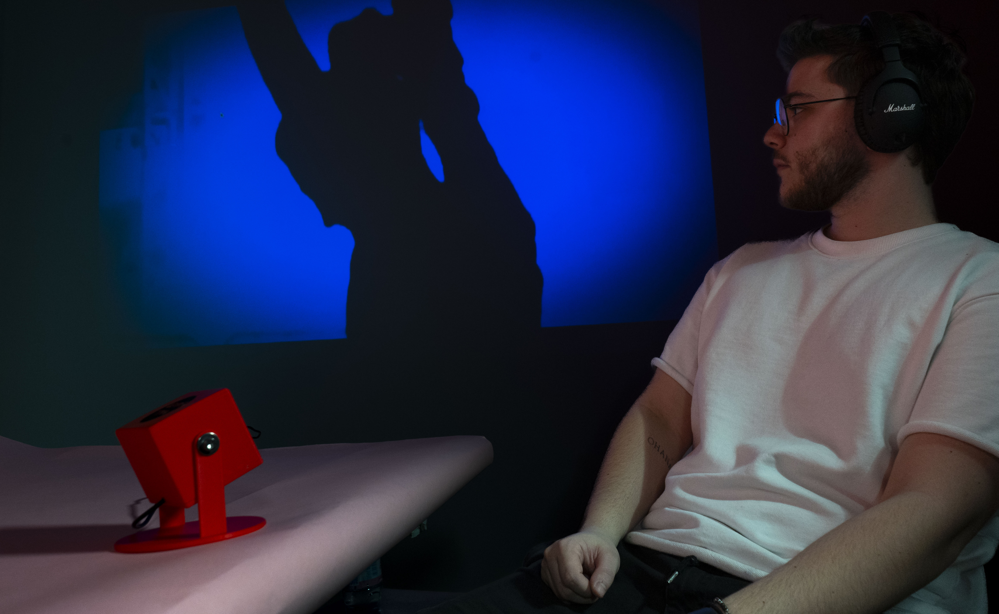
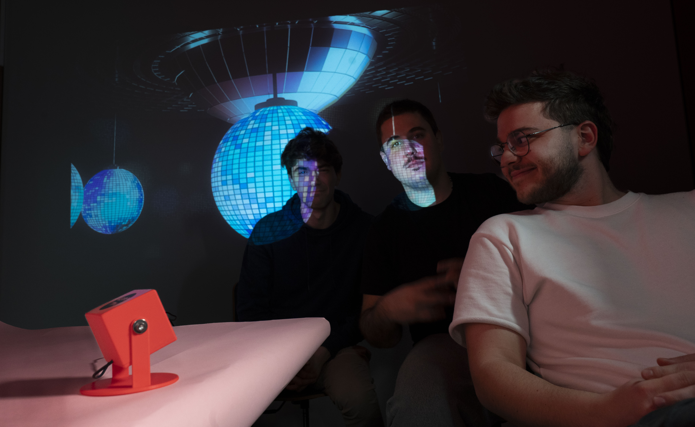

Wall Saver
An AI-driven interactive projection system that detects human activity and environmental context, then dynamically selects ambient video content to transform the space in real time.
| Author(s) | Zheng Chen, Amaël Cacciola |
|---|---|
| Date | Interactive installation / AI projection experiment |
| Focus | Computer vision, adaptive media, ambient interaction |

Abstract
Wall Saver is an AI-driven interactive projection system that dynamically adjusts projected content based on detected human activity and the surrounding environment. Using a camera and AI analysis, the system identifies people's postures, activities, and objects in the scene, then selects the most suitable video to enhance the atmosphere.
This concept uses AI-powered scene recognition and dynamic content delivery to create immersive, interactive environments, transforming ordinary spaces into personalized ambient experiences.
Video
Demonstration of the Wall Saver system detecting activity and changing projection content in response.
Selected Images





How It Works
At the core of the system is a connected camera that captures real-time images of the surrounding environment. AI analyzes each frame, recognizing people, postures, and contextual objects such as laptops, books, headphones, speakers, cups, or bottles. Based on this reading of the scene, the system classifies the user's activity and triggers a matching visual projection.
- Work: detects a person using a computer.
- Read: identifies reading behavior.
- Relax: recognizes a seated posture without holding objects.
- Party: detects more than two people with no computer present.
- Drink: identifies cups or bottles in use.
- Music: detects headphones or speakers.
- Love: captures special moments through subtle gesture cues.
Once the state is identified, Wall Saver automatically selects and projects the most appropriate video content for that moment. The entire flow is hands-free, creating a seamless and intuitive interaction between the user, the room, and the projected media.
Key Features
AI-Powered Scene Recognition
Real-time detection of people, objects, and activity cues in the environment.
Dynamic Content Selection
Projection content changes automatically to match the user's current state.
Automatic Projection
No manual input is required once the system is placed and running.
Smart Audio Control
Optional sound playback can be enabled to enrich immersion when needed.
Engaging Ambient Experience
The projected visuals adapt to daily routines and help shape a personalized atmosphere.
Future Improvements
- Expanded Activity Recognition: support for exercise, meditation, phone use, and other everyday behaviors.
- User Customization: manual override options for users who want to choose or fine-tune the projected mood.
- Smart IoT Integration: synchronization with lighting and sound systems for a richer multisensory environment.
This adaptive approach rethinks digital space as something responsive and emotionally aware, blending AI, projection, and everyday behavior into a single ambient system.
User Journey
Simple Setup
Users place the device in a suitable location, point the camera toward the scene, and launch the web-based analyzer.
Automatic Analysis
The system continuously reads the environment and infers activity without additional input.
Ambient Response
Projection content updates in real time so the room feels responsive, contextual, and personalized.
The intended experience is minimal and effortless: place the device, open the analyzer, and let the system respond automatically.
Coding
The basic code structure uses a camera feed to capture the current activity, converts the image into a format suitable for analysis, and sends it to ChatGPT for scene understanding. Based on the returned state, the system selects a matching projection video and sends it to the projector.
LLM Prompt
After analyzing the image content, the AI selects the most appropriate state according to the prompt description and returns JSON data containing the pose, whether a computer is present, the number of people, and a short scene description.
const messages = [
{
role: "user",
content: [
{
type: "text",
text: "What's in the image? Is there a person? " +
"If there is a person, Please identify the pose of the person. " +
"The pose could be: " +
"'work' (if there's a person using a computer), " +
"'read' (if someone is reading a book), " +
"'relax' (if a person is sitting without holding anything), " +
"'party' (if there are more than 2 people and no computer is detected), " +
"'drink' (if a person is holding a cup or bottle), " +
"'love' (if a person compares the shape of a heart with their hand), " +
"or 'music' (if a person is using headphones or speakers). " +
"Also, check if there is a computer. " +
"Provide a short description of the image. " +
"Return a JSON with the pose, computer presence, people count, and a brief description of the image.",
},
{
type: "image_url",
image_url: {
url: imageUrl,
},
},
],
},
];Adjusting the Projection Content
Once a state is returned from the model, the system maps it to a corresponding ambient video and plays it in the projection window.
function playVideo(state) {
if (!popupWindow || popupWindow.closed) {
initializePopupWindow();
}
const videoMap = {
work: "mood_video/work.mp4",
read: "mood_video/read.mp4",
relax: "mood_video/relax.mp4",
party: "mood_video/party.mp4",
music: "mood_video/music.mp4",
sleep: "mood_video/sleep.mp4",
dance: "mood_video/dance.mp4",
drink: "mood_video/drink.mp4",
love: "mood_video/love.mp4",
};
popupWindow.document.body.innerHTML = `
<video width="100%" height="100%" autoplay muted loop playsinline>
<source src="${videoMap[state]}" type="video/mp4">
</video>
`;
}